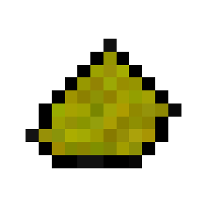

Home
Wikipedia
Goldron

Appearance
Goldron's color is gold-like. It's very rare and mysterious. If you hold it in your hand, then it will cause nause, until you put it back to your inventory.
How to get.
You can get it from
Goldron Ore
and it drops 1 of it.